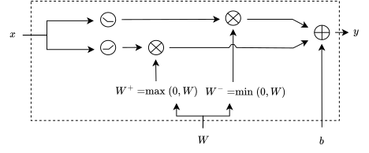

1. Department of Information Engineering, University of Padova, Padova (PD), Italy
2. Human Inspired Technology Research Centre, University of Padova, Padova (PD), Italy
Proceedings of the 42nd International Conference on Machine Learning (ICML), Vancouver, Canada. PMLR 267, 2025.
@inproceedings{SinigagliaSartorSusto2025,
author = {Davide Sartor, Alberto Sinigaglia, Gian Antonio Susto},
title = {Advancing Constrained Monotonic Neural Networks: Achieving Universal Approximation Beyond Bounded Activations},
booktitle = {Proceedings of the 42nd International Conference on Machine Learning (ICML)},
year = {2025},
}
Conventional techniques for imposing monotonicity in MLPs by construction involve the use of non-negative weight constraints and bounded activation functions, which pose well-known optimization challenges. In this work, we generalize previous theoretical results, showing that MLPs with non-negative weight constraint and activations that saturate on alternating sides are universal approximators for monotonic functions. Additionally, we show an equivalence between the saturation side in the activations and the sign of the weight constraint. This connection allows us to prove that MLPs with convex monotone activations and non-positive constrained weights also qualify as universal approximators, in contrast to their non-negative constrained counterparts. Our results provide theoretical grounding to the empirical effectiveness observed in previous works while leading to possible architectural simplification. Moreover, to further alleviate the optimization difficulties, we propose an alternative formulation that allows the network to adjust its activations according to the sign of the weights. This eliminates the requirement for weight reparameterization, easing initialization and improving training stability. Experimental evaluation reinforces the validity of the theoretical results, showing that our novel approach compares favourably to traditional monotonic architectures.
Monotone MLPs with weight-constraint and bounded activations (pink) and our proposed approach based on \(\text{ReLU}\) (blue). The former can only represent bounded functions and, thus, cannot extrapolate the data trend, which is important in many domains, such as time-series analysis and predictive maintenance.
A function \( \sigma: \mathbb{R} \rightarrow \mathbb{R} \) is right-saturating if \(
\lim_{x \rightarrow +\infty} \sigma(x) \in \mathbb{R} \), and left-saturating if \(
\lim_{x \rightarrow -\infty} \sigma(x) \in \mathbb{R} \).
We denote the sets of right- and left-saturating activations by \( \mathcal{S}^+ \) and \(
\mathcal{S}^- \), respectively.
For any MLP with non-negative weights and activation \( \sigma(x) \), and for any \( a \in \mathbb{R}_+, b \in \mathbb{R} \), there exists an equivalent MLP with non-negative weights and activation \( a\sigma(x) + b \).
Consequently, we assume without loss of generality that all activations saturate to zero.
An MLP \( g_\theta: \mathbb{R}^d \rightarrow \mathbb{R} \) with non-negative weights and 3 hidden layers can interpolate any monotonic non-decreasing function \( f(x) \) on a finite set of \( n \) points, provided that the activations are monotonic non-decreasing and alternate saturation sides:
Let \( \alpha \in \mathbb{R}_+^d \), \( \beta \in \mathbb{R}^d \). Define: \[ A^+ = \{ x : \alpha^\top (x - \beta) > 0 \}, \quad A^- = \{ x : \alpha^\top (x - \beta) < 0 \} \] Then the \( i \)-th neuron of the first hidden layer of an MLP with non-negative weights can approximate: \[ h^{(1)}_i(x) \approx \begin{cases} \sigma^{(1)}(+\infty), & x \in A^+ \\ \sigma^{(1)}(-\infty), & x \in A^- \\ \sigma^{(1)}(0), & \text{otherwise} \end{cases} \]
Consider \( A = \bigcap_{i=1}^n A_i \), where each \( A_i \subset \mathbb{R}^d \). Let \( \gamma \) be in the image of \( \sigma^{(k)} \). Then a single neuron \( h^{(k)}_j \) in the \( k \)-th layer can approximate: \[ h^{(k)}_j(x) \approx \gamma \cdot \mathbf{1}_A(x) \] provided:
Let \( x_1, \dots, x_n \) be the ordered points with \( f(x_i) \le f(x_j) \) for \( i < j \). The proof proceeds layer-wise:
This completes the proof of universal approximation under alternating saturation. For a more formal proof, please refer to the paper
An MLP composed of activations \(\text{ReLU}(x) = \max(0, x)\) and non-negative weights cannot
approximate any monotonic function.
This is due to the fact the composition of convex non-decreasing functions is still a convex
non-decreasing function. Indeed, ReLU is a convex non-decreasing function, and the non-negativity of
the linear layers \(|W|\) is also a convex non-decreasing function.
Considering an MLP \(f\) as
\[f(x) = \dots -|W|\text{ReLU}(-|W| x + b) + b \dots \]
we can group the negative weights and the ReLU activation together, obtaining a new activation
\(\text{ReLU}' = -\text{ReLU}(-x)\), which is a convex non-decreasing function.
In particular, given we need 2 linear layers to create \(\text{ReLU}'\), this happens at alternating
activations.
This means that this MLP can be reconduct to the case proven in the main theorem, showing how it's a
universal approximator for monotonic functions.

When employing weight-constrained monotonic MLPs, the choice of activation saturation sides remains a
non-trivial hyperparameter.
However, it is possible to remove this requirement—and relax the weight constraints entirely—by
reordering the computational steps.
Consider a single-layer transformation \( f(x) = \sigma(|W|x + b) \), where absolute weights enforce
non-negativity. We can decompose this affine transformation as:
\[
|W|x + b = W^+ x - W^- x + b,
\]
where \( W^+ = \max(W, 0) \) and \( W^- = \min(W, 0) \).
Applying the activation function independently to each affine component yields the following
parameterization:
\[
\hat{f}(x) = \sigma(W^+ x + b) - \sigma(W^- x + b).
\]
We refer to this as the pre-activation switch.
Any function representable by an affine transformation with non-negative weights followed by either \( \sigma \) or its reflection \( \sigma' \), can also be represented using the pre-activation switch formulation, up to an additive constant.
Proof sketch: If all weights share the same sign, then one of the terms collapses to a constant:
The residual constant can be absorbed by the bias in the next layer.
This demonstrates that monotonic MLPs composed of at least 4 such layers are universal approximators. Moreover, the formulation is strictly more expressive than the weight-constrained variant, as the latter is a special case.
By reversing this logic from the final layer, we obtain an alternative formulation, referred to as the post-activation switch: \[ \hat{f}(x) = W^+ \sigma(x) + W^- \sigma(-x) + b, \]
The method only adds one matrix multiplication and leverages existing GPU-parallelized infrastructure. In practice, no significant computational overhead was observed in the tested architectures.
class MonotonicLinear(nn.Linear): def __init__( self, in_features: int, out_features: int, bias: bool = True, device=None, dtype=None, pre_activation=nn.Identity(), ): super().__init__( in_features, out_features, bias=bias, device=device, dtype=dtype ) self.act = pre_activation def forward(self, x): w_pos = self.weight.clamp(min=0.0) w_neg = self.weight.clamp(max=0.0) x_pos = F.linear(self.act(x), w_pos, self.bias) x_neg = F.linear(self.act(-x), w_neg, self.bias) return x_pos + x_neg monotonic_mlp = nn.Sequential([ MonotonicLinear(N, 16, pre_activation=nn.Identity()), MonotonicLinear(16, 16, pre_activation=nn.SELU()), MonotonicLinear(16, 16, pre_activation=nn.SELU()), MonotonicLinear(16, 1, pre_activation=nn.SELU()), ])